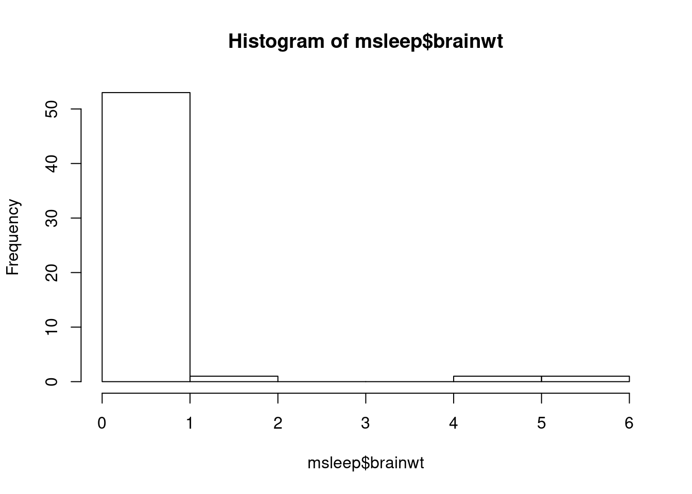
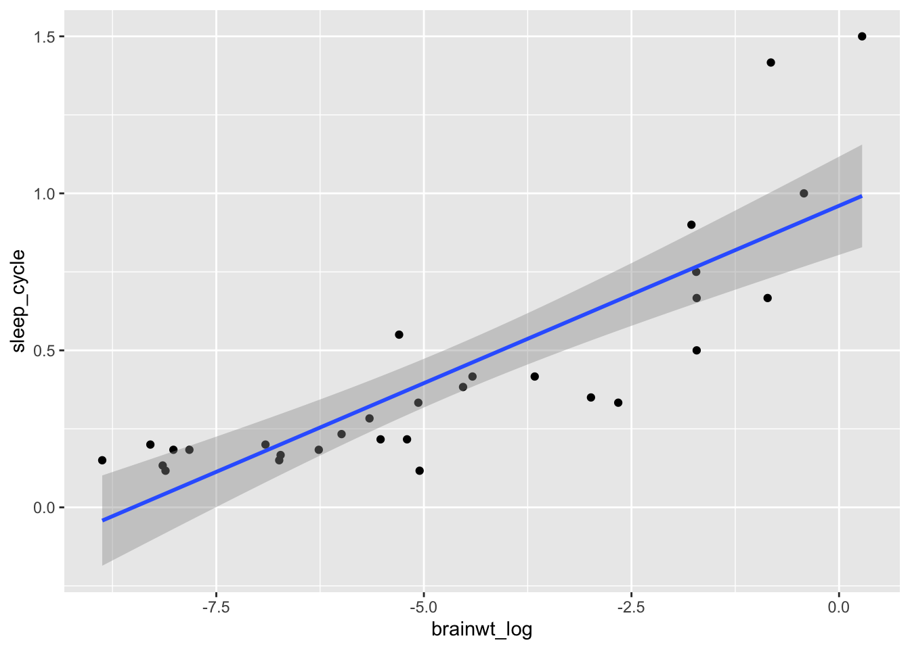

3.6 Applying basic stats
Following up on our analysis using visualizations, we will review different types of statistical tests that we can perform on data. We will again revisit the mammalian sleep dataset msleep.
## # A tibble: 6 x 11
## name genus vore order conservation sleep_total sleep_rem sleep_cycle awake
## <chr> <chr> <chr> <chr> <chr> <dbl> <dbl> <dbl> <dbl>
## 1 Chee… Acin… carni Carn… lc 12.1 NA NA 11.9
## 2 Owl … Aotus omni Prim… <NA> 17 1.8 NA 7
## 3 Moun… Aplo… herbi Rode… nt 14.4 2.4 NA 9.6
## 4 Grea… Blar… omni Sori… lc 14.9 2.3 0.133 9.1
## 5 Cow Bos herbi Arti… domesticated 4 0.7 0.667 20
## 6 Thre… Brad… herbi Pilo… <NA> 14.4 2.2 0.767 9.6
## # … with 2 more variables: brainwt <dbl>, bodywt <dbl>3.6.1 Describing quantitative variables
There are several ways to describe quantitative measurements. We might first look at the range of values using the quantile function, which returns the min, max, and median values as well as the 25th and 75th percentiles.
## 0% 25% 50% 75% 100%
## 0.00014 0.00290 0.01240 0.12550 5.71200Note that we are using the setting na.rm = TRUE as an argument to these functions so that it ignores NA values in the data.
You can also directly isolate some of these values using the functions min or max. We might describe the center of our data, that is the mean or the median values using those respective function names.
## [1] 0.0124## [1] 0.2815814We might also want to describe the spread in the data, such as the standard deviation or the interquartile range.
## [1] 0.9764137## [1] 0.1226Visualizations are a great way to see this information in one picture. We have learned to create a fancier histogram, but the hist function always works for quick viewing (worksheet tasks 3.6.1A and 3.6.1B).

It is clear from this image that the data is skewed towards approaching 0 with a few high outliers.
3.6.2 Finding differences in data
For the following statistical tests, we want to determine if measurements of a quantitative variable taken on a certain group of samples are different from similar measurements taken from a different group of samples.
To know if these differences are statistically significant, we need to be aware of the uncertainty in our data. Even if we have collect many observations, there is generally noisiness and error in those measurements. Thus, we have uncertainty if the mean value we calculate for a group is in fact the true mean.
We can calculate a confidence interval to describe our guess for the mean in our data. That is, we can identify the mean based on our samples, but also provide an upper or lower bound for where the mean might be (worksheet task 3.6.2A).
##
## One Sample t-test
##
## data: msleep$brainwt
## t = 2.1581, df = 55, p-value = 0.03531
## alternative hypothesis: true mean is not equal to 0
## 95 percent confidence interval:
## 0.02009613 0.54306673
## sample estimates:
## mean of x
## 0.2815814We use this t.test function because we assume that our data is normally distributed (which is not necessarily always the case) and it has a small sample size. You can see that while the mean for brain weight from this popular is 0.28, the range is fairly large (between 0.2 and 0.54) because of how big the variability is in the data.
If we want to determine if two populations have a difference in their mean values that is statistically significant, we can calculate the t-test between two sets of observations. Let’s look at whether the average time spent awake by mammals who are insectivores is significantly less than those who are not (worksheet task 3.6.2B).
insectivores <- msleep %>%
filter(vore == "insecti") %>%
select(awake)
other.mammals <- msleep %>%
filter(vore != "insecti") %>%
select(awake)
head(insectivores)## # A tibble: 5 x 1
## awake
## <dbl>
## 1 4.3
## 2 4.1
## 3 5.9
## 4 15.6
## 5 15.4## # A tibble: 6 x 1
## awake
## <dbl>
## 1 11.9
## 2 7
## 3 9.6
## 4 9.1
## 5 20
## 6 9.6At first, we use tidyverse functions to isolate only the mammals that match the feeding behavior and select only the relevant column, before feeding this data into the t.test function (worksheet tasks 3.6.2C and 3.6.2D).
##
## Welch Two Sample t-test
##
## data: insectivores and other.mammals
## t = -1.7796, df = 4.3091, p-value = 0.0723
## alternative hypothesis: true difference in means is less than 0
## 95 percent confidence interval:
## -Inf 0.8336811
## sample estimates:
## mean of x mean of y
## 9.06000 13.86056These results show a p-value of 0.07, which is not the usual level of significance that most scientists accept (p-value < 0.05).
However, there are numerous feeding behaviors besides insectivore and we may be interested in comparing the multiple categories against each other. We can use ANOVA (analysis of variance) to see how our quantitative variable is affected by the different kinds of feeding behavior (worksheet tasks 3.6.2E and 3.6.2F).
## Df Sum Sq Mean Sq F value Pr(>F)
## vore 3 133.7 44.58 2.234 0.0916 .
## Residuals 72 1437.0 19.96
## ---
## Signif. codes: 0 '***' 0.001 '**' 0.01 '*' 0.05 '.' 0.1 ' ' 1
## 7 observations deleted due to missingnessThe p-value of 0.09 suggests that there may not be a strongly significant difference in the average time spent awake between these groups.
3.6.3 Identifying correlations
When we are examining the relationship between two quantitative variables, we might be interested in whether they correlate with one another. A positive correlation between x and y means that as x increases so does y. A negative correlation between x and y means that as x increases, y decreases. We can use the base R cor function to calculate the correlation between two numeric vectors.
## [1] NANotice that we get NA instead of an actual numeric value. Unfortunately there is not an easy setting to have the cor function ignore any NA values. Thus, we need to temporarily remove these values. Let’s first find them with the summary function.
## Min. 1st Qu. Median Mean 3rd Qu. Max.
## 0.005 0.174 1.670 166.136 41.750 6654.000## Min. 1st Qu. Median Mean 3rd Qu. Max. NA's
## 0.00014 0.00290 0.01240 0.28158 0.12550 5.71200 27There are no NA values in the bodywt column, but there are 27 NA values in the brainwt column. Let’s remove those using a helpful function in tidyverse and save the more complete dataset as msleep2 (worksheet task 3.6.3A).
## [1] 83 11## [1] 56 11You can see that we dropped 27 rows, corresponding to the mammals for whom brain weight was not measured or available. Now we can try to use the cor function.
## [1] 0.9337822We can see that the correlation is 0.93, a value very close to 1. This suggests that these variabilities are almost perfectly correlated with each other, which we saw when we plotted these two variables against each other in the prior section.
There are multiple types of correlations. The cor function uses a Pearson correlation by default and can use different methods like Spearman. Let’s explore the difference between these correlations by looking at the relationship between the log value of brain weight and length of sleep cycle.
msleep3 <- msleep %>%
mutate(brainwt_log = log(brainwt)) %>%
drop_na(brainwt_log, sleep_cycle)
ggplot(msleep3, aes(x = brainwt_log, y = sleep_cycle)) +
geom_point() + geom_smooth(method = "lm")## `geom_smooth()` using formula 'y ~ x'
When we plot these variables against each other, including a fitted linear trend line, we can see that there is a relationship between these variables (worksheet task 3.6.3B). However, the points do not quite fit a straight line if we look at the edges and center of this fitted line. This will reflect in our calculation of two different correlations (worksheet task 3.6.3C).
## [1] 0.8331014## [1] 0.8726893Pearson correlations are higher when the data fits to a straight line like a trend line. However, Spearman correlations do not require a single slope: as long as one value goes up and the other goes up, these values are considered highly correlated.
3.6.4 Producing linear models
You may be interested in studying the relationship between one or more variables and some outcome that you care about. To determine if this set of one or more variables are strong predictors of an outcome (some quantitative variable), you can fit a linear model to this data using the lm function.
Here we train a linear model to try to predict brain weight from body weight in the msleep dataset.
Linear models are established with a formula with the format of outcome ~ predictor where we are trying to determine if the predictor is able to help us accurately estimate an outcome (worksheet task 3.6.4A).
##
## Call:
## lm(formula = brainwt ~ bodywt, data = msleep2)
##
## Residuals:
## Min 1Q Median 3Q Max
## -0.20686 -0.07565 -0.07184 -0.03565 1.18663
##
## Coefficients:
## Estimate Std. Error t value Pr(>|t|)
## (Intercept) 0.0761566 0.0479290 1.589 0.12330
## bodywt 0.0009228 0.0003162 2.919 0.00686 **
## ---
## Signif. codes: 0 '***' 0.001 '**' 0.01 '*' 0.05 '.' 0.1 ' ' 1
##
## Residual standard error: 0.2459 on 28 degrees of freedom
## Multiple R-squared: 0.2333, Adjusted R-squared: 0.2059
## F-statistic: 8.52 on 1 and 28 DF, p-value: 0.006859In the summary of the results of this modeling, we see that bodywt is a significant predictor of brainwt in the msleep dataset. We can provide more predictors into our formula in the format: outcome ~ predictor1 + predictor2 + ... (worksheet tasks 3.6.4B and 3.6.4C).
##
## Call:
## lm(formula = sleep_total ~ bodywt + brainwt, data = msleep2)
##
## Residuals:
## Min 1Q Median 3Q Max
## -4.3940 -2.2591 -0.1205 1.3586 7.5917
##
## Coefficients:
## Estimate Std. Error t value Pr(>|t|)
## (Intercept) 12.309310 0.675518 18.222 < 2e-16 ***
## bodywt -0.014261 0.004874 -2.926 0.00688 **
## brainwt -3.290750 2.551012 -1.290 0.20800
## ---
## Signif. codes: 0 '***' 0.001 '**' 0.01 '*' 0.05 '.' 0.1 ' ' 1
##
## Residual standard error: 3.319 on 27 degrees of freedom
## Multiple R-squared: 0.4012, Adjusted R-squared: 0.3569
## F-statistic: 9.046 on 2 and 27 DF, p-value: 0.0009843These results suggest that neither bodywt nor brainwt are significant predictors of sleep_total. That means that the value of either of those measurements does not give us information that helps us guess the total sleep duration for a mammal accurately.
Licensed Creative Commons Attribution-NonCommercial-ShareAlike 4.0